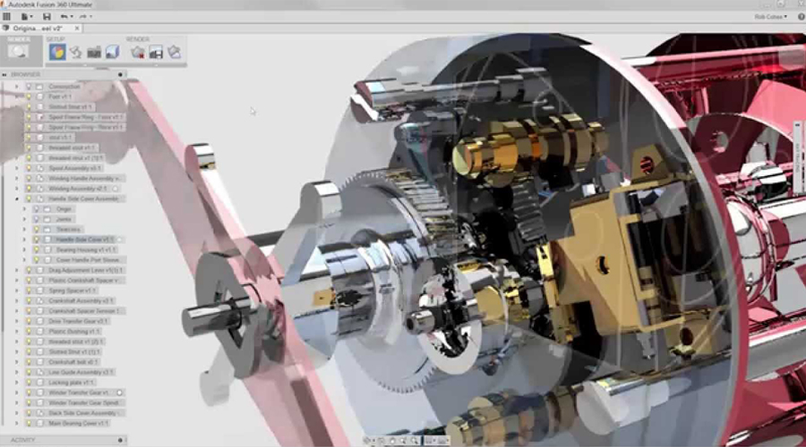
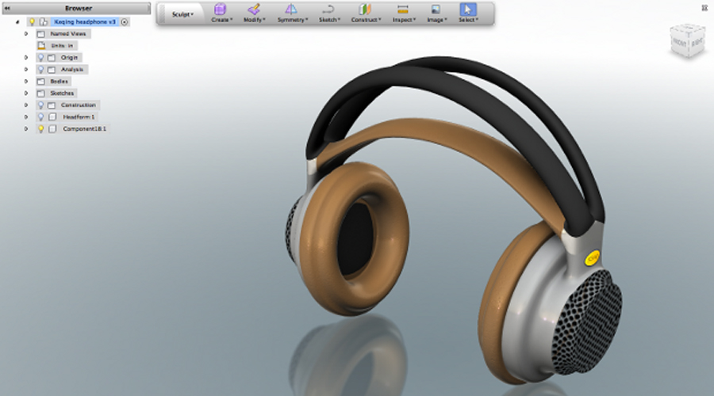

WORKSHOP
INTRO WORKSHOP: FUSION 360 (3D MODELING) | 简介车间: FUSION 360 (3D建模)
When:Saturday, June 3, from 3pm to 6pm
Where: Xinfab - 665,Changhua Road, Jing'an District, Shanghai (DT Space)
Price: 150 RMB (3 hours workshop)
Autodesk Fusion 360 is certainly one of the best 3D modeling softwares for beginners to start and professionals to work with. It has its own "cloud" where you can easily share files too.
You'll learn a clear procedure to build 3D models and get your job done elegantly.
Things you should bring:
// Your laptop and charger
// Mouse (you’ll have a hard time without one)
// Install Fusion 360 in your laptop (http://www.autodesk.com.cn/education/free-software/fusion-360 - Just sign up and click "register" to create an education account that is free of charge)
// Your passion, curiosity, and questions


WORKSHOP SCHEDULE
// STEP 1: Think in 3D
// STEP 2: The basics of Fusion 360
// STEP 3: Practice building your own model
///////////////////////////////////
HOW TO SIGN UP
// Alipay
Transfer the workshop fee to pay@xinfab.com (please indicate your phone number on the payment details so we can contact you!)
Questions? Can't pay via Alipay? Send an email to info@xinfab.com.
///////////////////////////////////
ABOUT THE TEACHER
Yuruky is a chinese digital maker since he worked at Xinfab as our former space manager. He has since moved on to work in the film industry as a film critic but continues to be a Xinfabber at heart and help out whenever he can.
时间:：6月3日星期六，15:00 - 18:00
地点： 新Fab - 上海市静安区昌化路665号（DT空间）
价格： 150元 （3个小时车间）
可以说，Autodesk出品的Fusion 360是新手入门和专家工作的最佳3D建模软件。
你可以清楚地学习到3D建模的流程，优雅地完成工作。
同时，你会对日常事物有新的看待方式，知道它们是如何构成的、也知道自己可以怎样制作它们！
需要带上
// 笔记本电脑及其充电器
// 滑鼠 (你没有的话，对你不方便）
// 请先安装好Fusion 360软件（下载地址：http://www.autodesk.com.cn/education/free-software/fusion-360 - 注册账号之后，点击“获取访问权限”即可免费下载使用Fusion 360。）
// 你的热情、好奇心和问题
///////////////////////////////////
工作坊流程
// 第1步：3D思维
// 第2步：Fusion 360基础用法
// 第3步：试着建立自己的3D模型
///////////////////////////////////
如何注册
// 支付宝
车间费转移到pay@xinfab.com（请在付款明细上注明您的电话号码，以便我们与您联系！）
有问题? 不能通过支付宝付款？ 发送电子邮件到 info@xinfab.com.
///////////////////////////////////
关于教师
Yuruky是一名中国数字制造商，因为他曾在新fab担任我们的前任空间管理。 他已经转移到电影界的电影评论家，但是继续是一个新fabber - 他每次有机会就来快乐地帮助我们。